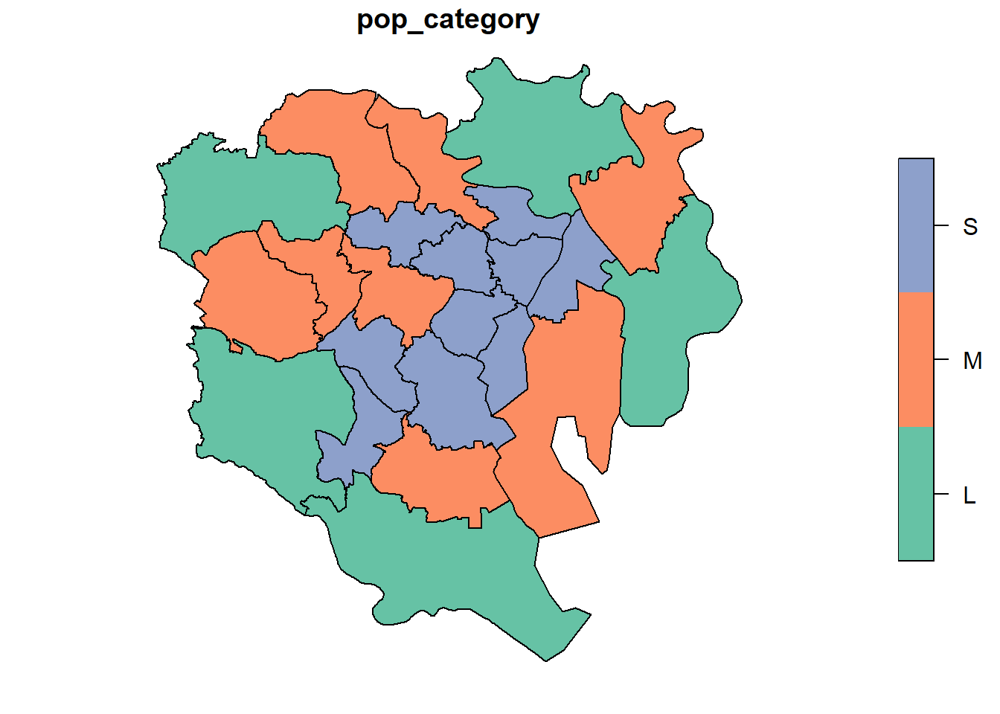

5.1 sfとdplyr
sfデータはそのままdplyrパッケージを使用することができます。dplyrはデータを操作することに長けたパッケージで使い勝手が良いため重宝されています。いくつかdplyrの関数を見ていきましょう。
library(dplyr)5.1.1 select
select関数は特定の列を抜き出します。
tokyo23 %>% select("name", "population")## Simple feature collection with 23 features and 2 fields
## Geometry type: MULTIPOLYGON
## Dimension: XY
## Bounding box: xmin: 370083.3 ymin: 3931299 xmax: 402192.8 ymax: 3964406
## Projected CRS: WGS 84 / UTM zone 54N
## First 10 features:
## name population geometry
## 1 kita 341076 MULTIPOLYGON (((387269.3 39...
## 2 toshima 291167 MULTIPOLYGON (((384497.7 39...
## 3 bunkyo 219724 MULTIPOLYGON (((386693.6 39...
## 4 shinjuku 333560 MULTIPOLYGON (((385236.1 39...
## 5 sumida 256274 MULTIPOLYGON (((392360.8 39...
## 6 taito 198073 MULTIPOLYGON (((388927.6 39...
## 7 shinagawa 386855 MULTIPOLYGON (((388484.1 39...
## 8 koto 498109 MULTIPOLYGON (((388929.4 39...
## 9 nakano 328215 MULTIPOLYGON (((381512.9 39...
## 10 suginami 563997 MULTIPOLYGON (((372129.3 39...nameとpoplationだけ抜き出せました。
5.1.2 filter
filter関数は条件を指定してそのデータだけを抽出します。
例として人口が700000人以上の地域だけを抽出します・
tokyo23 %>% filter(population > 700000)## Simple feature collection with 3 features and 7 fields
## Geometry type: MULTIPOLYGON
## Dimension: XY
## Bounding box: xmin: 370083.3 ymin: 3931299 xmax: 393931 ymax: 3960419
## Projected CRS: WGS 84 / UTM zone 54N
## name region population male female area density
## 1 nerima tokyo 721722 351609 370113 48135551 14993.533
## 2 setagaya tokyo 903346 428874 474472 58036332 15565.181
## 3 ota tokyo 717082 359753 357329 73451025 9762.723
## geometry
## 1 MULTIPOLYGON (((370246.7 39...
## 2 MULTIPOLYGON (((378357.3 39...
## 3 MULTIPOLYGON (((392413.4 39...featureが23から3まで減っています。2011年当時では人口70万人を超える区は3つしかないようです。
5.1.3 mutate
mutate関数は新しく変数を作る際に便利な関数です。
- 人口が30万未満はS
- 人口が30万~60万未満はM
- 人口が60万以上はL
とするpop_categoryという変数を作ってみましょう
tokyo23_category <- tokyo23 %>%
mutate(pop_category = case_when(population < 300000 ~ "S",
population >= 300000 & population< 600000 ~ "M",
population >= 600000 ~ "L"
)
)新しい変数pop_categoryが追加されたtokyo23_categoryというsfデータが作成できました。
pop_categoryで色分けした図も示しておきます。
tokyo23_category[,"pop_category"] %>%
plot()
23区の中心ほど、人が住んでいないことが分かります。（おそらくSの区は昼間人口が多い地域なはずです。）
5.1.4 group_by と summarize
group_by関数は変数ごとにグループを作ります。例えばpop_categoryをS,M,CLに分けて結果が出力されます。
summarize関数はデータ集計を行う関数です。この二つは組み合わせて使うことが多いので、まとめて見ていきましょう
tokyo23_category %>%
#pop_categoryのグループを作ります
group_by(pop_category) %>%
#areaとdensityの平均を求めます
summarise(area_ave = mean(area),
density_ave = mean(density))## Simple feature collection with 3 features and 3 fields
## Geometry type: GEOMETRY
## Dimension: XY
## Bounding box: xmin: 370083.3 ymin: 3931299 xmax: 402192.8 ymax: 3964406
## Projected CRS: WGS 84 / UTM zone 54N
## # A tibble: 3 x 4
## pop_category area_ave density_ave geometry
## <chr> <dbl> <dbl> <GEOMETRY [m]>
## 1 L 56582664. 13304. MULTIPOLYGON (((370267.7 3954087, 370273.1~
## 2 M 30211985. 15723. MULTIPOLYGON (((379086.6 3948867, 379083.5~
## 3 S 13507907. 16208. POLYGON ((380045.5 3947493, 380030.7 39475~area_aveとdensity_aveの2つの集計が出来ました。
M,LはMULTIPOLYGONでSだけPOLYGONとなっています。これはM,Lのポリゴンが飛び飛びなのに対し、Sのみ隣接し合っており、単一のポリゴンとして集計されたためです。